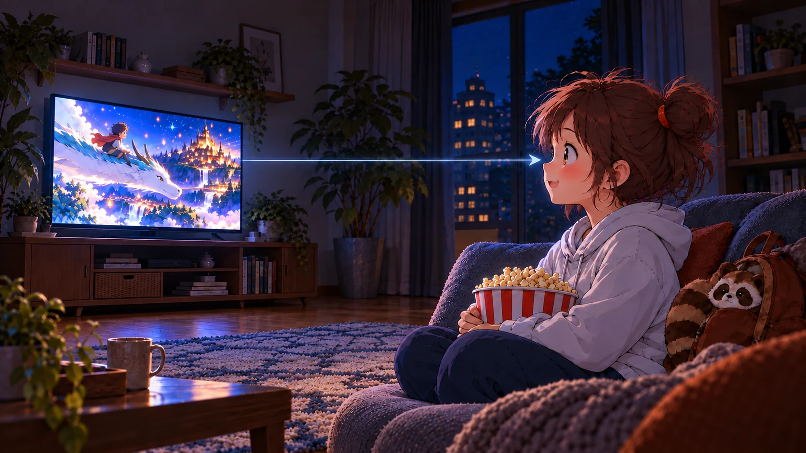

沿著探索路線，一步步認識光
從眼睛看到的現象開始
光要進入眼睛為什麼我們看得見東西？
我們看見光源，也看見被照亮的物體；兩種情況都需要光進入眼睛，但光走的路徑不同。
我在家看電視時，電視螢幕的光直接進入眼睛；可是書頁自己不發光，阿公怎麼也看得見？
我們來找找看：檯燈照到書頁後，光又往哪裡去了？
小葵看見電視螢幕發出的光
夜裡，電視螢幕是光源；螢幕光沿直線進入小葵的眼睛。

阿公看見被燈光照亮的書
夜裡，檯燈照亮書頁；書頁反射的光進入阿公的眼睛。
箭頭表示光前進的方向；光照到書頁後向不同方向反射，部分反射光進入眼睛。
先記住：看見物體，需要有光進入眼睛；光可能直接來自光源，也可能先照到物體再反射進眼睛。
分清楚光從哪裡來
自己發光或反射光今晚，哪些光讓小葵看得見？
切換照向月球的陽光和書桌檯燈，觀察月亮、書頁與光路如何改變。
月亮的光是從太陽反射過來的。那月光照到書頁後，書頁也會把光反射進我們眼睛嗎？
會的，反射太陽光的月光照到書頁後，還能再反射進我們的眼睛裡。可以試著關掉檯燈，看看關掉後是否還是看得到書本。
觀察光的路徑
光沿直線前進光路會彎嗎？
觀察三個小孔是否排成一直線，以及屏幕亮點如何變化。
現在中間板偏高，屏幕沒有亮點；光會不會自己轉彎，繞過中間板呢？
先把中間板往下調，直到屏幕出現亮點；再慢慢往上移，觀察亮點如何變化。
中間板偏高時，亮點消失了；光沒有繞過去。
你看，小孔前後距離改變時，只要仍排成一直線，光就能通過；稍微偏離時，屏幕亮點會變暗；偏得太多，光被板片擋住，亮點就消失了。
把直線光路連到影子
不透明物體擋住光影子怎麼形成？
剛才孔板擋住了光；如果換成一顆不透明球，屏幕上是不是也會留下暗的地方？
沿著光源到屏幕的路徑看一看，球擋住光之後，屏幕哪裡收不到光？
光源發出的光沿直線前進。當不透明物體擋在光源和屏幕之間，沒有光到達的區域就形成影子。
球體停在光路旁，屏幕均勻受光。
直接拖曳球體沿導軌移動，屏幕影子會隨位置改變；拖曳空白處可旋轉場景，滾輪或雙指可縮放。
原來不透明的球擋住光線後，光照不到的地方就在屏幕上形成影子。
你觀察得沒錯。影子不是物體發出的，而是光被不透明物體擋住後，在屏幕上留下的暗區。
觀察物體位置的影響
物體靠近光源，影子變大影子的大小如何改變？
試著移動光源和屏幕之間的遮擋物。觀察它靠近光源或靠近屏幕時，屏幕上的影子有什麼變化。
同一個物體的影子，為什麼有時會變大，有時又會變小呢？
試著讓遮擋物靠近光源，再慢慢遠離光源，觀察影子的大小如何改變。
球體靠近光源，屏幕上的影子較大。
拖曳球體沿導軌前後移動，觀察影子大小改變；拖曳空白處可旋轉場景，滾輪或雙指可縮放。
遮擋物靠近光源時，影子會變大；遠離光源時，影子會變小。
觀察重點：影子的大小會隨光源、遮擋物和屏幕的相對位置改變。示意圖用點光源簡化說明，實際影子邊緣可能較模糊。
我們看見光沿著路徑前進，也看見位置改變會影響影子。那麼，光走過這段距離要花多少時間呢？
感受光速的尺度
光不是瞬間到達光傳得有多快？
光沿直線傳播，但並非瞬間到達。快速點擊兩次，從這段短短的時間感受光速的尺度。
如果只有兩次點擊之間這麼短的時間，光能走多遠？
快速點下面的按鈕兩次：第一次開始計時，第二次停止，再看看這段時間光能繞地球幾圈。
真空中的光，每秒約走 30 萬公里。
人的反應時間雖短，光在這段時間已能走過很長的距離。
試試你的反應時間
按一下開始，再按一下停止
快速點擊此按鈕兩次，第一次開始計時，第二次停止計時。準備好後，點一下綠色按鈕開始。
換算成繞地球
點擊兩次後顯示圈數
以地球赤道一圈約 40,000 公里估算
這個活動量出的是兩次點擊的間隔，再用已知的光速換算距離；點擊本身不是直接測量光速。
第一段學習・單元小冊
月光影子劇場
替小葵和阿公完成一幕影子戲。把舞台道具移到合適的位置，讓實際投影和目標描邊重合。
我想讓月亮兔出現在幕上！可是道具要放在哪裡，影子才會剛好對上呢？
把月亮、兔子和樹影移到幕前，讓影子靠近各自的輪廓。差不多就好，舞台會幫你對準。
拖動道具接近淡金描邊即可對準；拖曳空白處轉動舞台。選取道具後，也可調整前後距離。